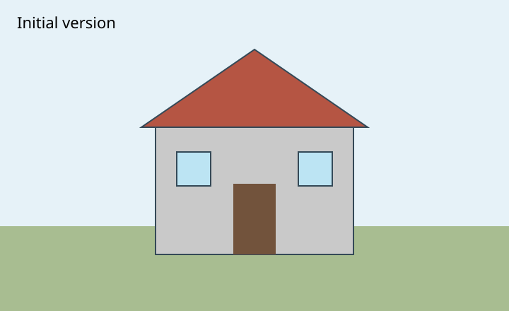
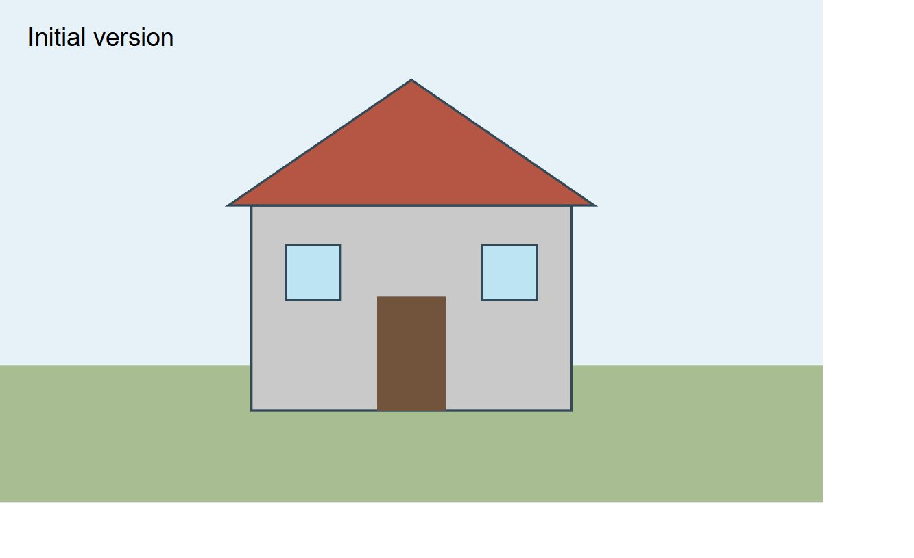
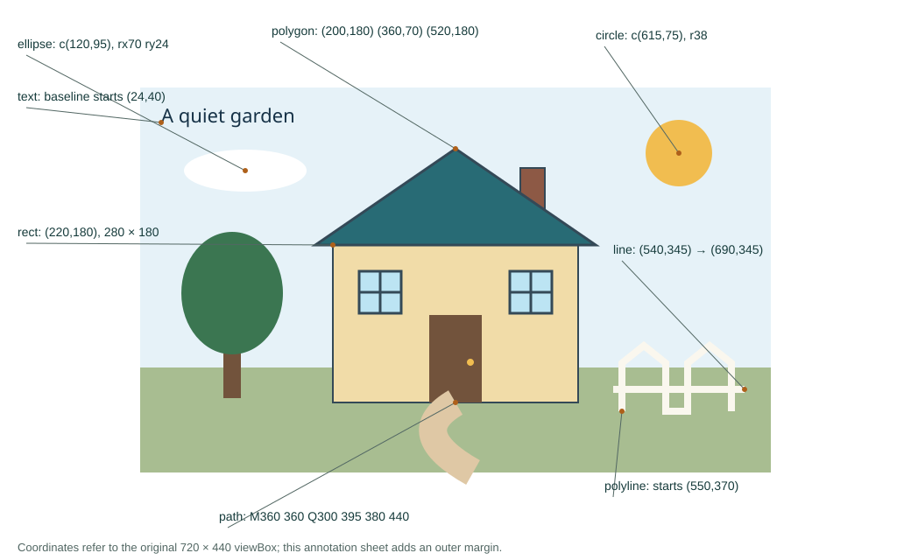

COS30045 · Demonstration 2
Drawing a house with SVG
An exercise in SVG, evidence and interaction.
Exercise 4.1 · SVG
Building a house with coordinates
The origin (0,0) is at the top left. x increases to the right; y increases downward. The canvas uses viewBox 0 0 720 440.
- 8 primitives One scene built from basic SVG shapes.
- One coordinate system x moves right; y moves down.
- Shared styling Two windows, one translated group.
View the initial version

Coordinate reference · all eight primitives
Reading the coordinates in the revised drawing
| SVG | Example | How to read it |
|---|---|---|
| rect | House walls | x=220, y=180; width=280, height=180 |
| circle | Sun | cx=615, cy=75; r=38 |
| ellipse | Cloud | cx=120, cy=95; rx=70, ry=24 |
| line | Fence rail | (540,345) to (690,345) |
| polygon | Roof | (200,180), (360,70), (520,180); automatically closed |
| polyline | Fence tops | Starts at (550,370), through (550,315), (575,295)…; remains open |
| path | Garden path | M360 360; Q300 395 380 440. Q uses control point (300,395) and endpoint (380,440). |
| text | Garden title | x=24, y=40 positions the start of the text baseline |
| g + translate | Two windows | Shared group: translate(250,210). The second window uses translate(172,0). Their top-left corners are (250,210) and (422,210). |
Window group: inherited styling
<g id="windows" fill="#bce4f3" stroke="#344957" stroke-width="3" transform="translate(250,210)"> <g><rect width="48" height="48" />…</g> <g transform="translate(172,0)">…</g> </g>
Evidence and Developer Tools
The initial browser capture and revised coordinate diagram document the drawing. Open an image to inspect the coordinates at full size. Captures are prepared after the classroom demonstration; they are not evidence of earlier classroom activity.

